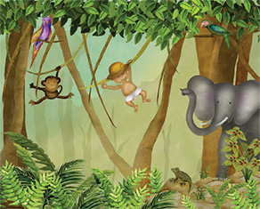
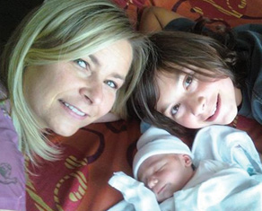
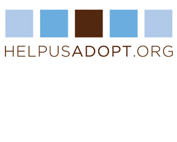

Imagine the questions and feelings you would have if you just found out you were adopted? It is certainly understandable for a young child to have those very same feelings and questions.
What if your child just found out that their best friend or cousin was adopted? One of the most important lessons we can teach our children is to have compassion for all human beings, regardless of how they came to be part of a family.
Having this discussion with your child early in their life, will help him/her develop a sense of security and also empathy for others. "Would You Love Me As Much" will help you as you begin to have this important conversation with your child.
Kim lives in New Jersey with her two sons. As the parent of an adoptive child and a child who "came from her belly," she can whole heartedly say that she loves them both "just as much."
“As an adoptive mother and someone who will be completely open with my son about his adoption, I wondered how and when to start the conversation. Overhearing someone say, "I can't believe he's adopted; he looks just like you!" My son (who is 3), said "I'm not adopted!" He didn't really know what it meant, but could feel from the context of the conversation that it meant he was different in some way. We've told him he is adopted, but his comprehension is limited. I started writing the book just for him and then realized others may also benefit.” - Kim
If you’re looking to adopt, or want to help others who would like to adopt. Becky Fawcett, of Helpusadopt.org, has been in your shoes and the site is a great resource for a family in either position.